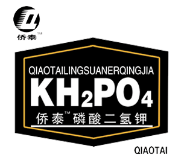

-

磷酸二氢钾的作用
侨泰磷钾核动力采用国家 先进的科学技术和直接法生产工艺，融合全球纯度最高的磷矿和钾矿，添加了效助剂，质量好，纯度高。
产品特点
本品具有促进农作物光合作用， 迅速补充土壤有效营养元素，提高土壤肥力，易为作物吸收利用，促进茎、秆、粒的生长。使作物苗旺杆壮、增加千粒重，提高结实率，增强作物抗倒伏、抗寒、抗旱抗病虫害能力，改善作物品质等功能。具有用量少、肥高效、易吸收、见效快、使用方便、增产效果显著等特点。是无毒、无害、无残留的绿色肥料。
-
侨泰硼的作用
侨泰硼采用先进的科学技术，添 加高效助剂而成。本产品溶解快。吸利用率高，可有效补充作物硼元素在棉花、油菜、向日葵、玉米、小麦、西瓜、甜瓜、打瓜、等作物使用后，增产效果明显。
产品功效
使用本品能有效防治作物因硼 引起的种生理性疾病。同时有效提高作物对氨、磷、钾的吸收效率，提高瓜果蔬菜的商品性，增强作物的抗逆性，本产品当季使用当季吸收，在土壤中无残留，不造成污染，符合环保要求及无公害农业发展方向，特别适宜大型农业机械操作，能与其他措施配合使用，简化操作技术，省工省本，使用前景广阔。
-
水溶磷钾的作用
磷钾能促进植株茎秆健壮，改善果实品质，增强植株抗寒能力 ，提高果实糖分和维生素C的含量，和氮的情况一样，缺磷钾症状首先出现老叶。
磷钾素供应不足时，碳水化合物代谢受压制，而呼吸作用加强，因此，缺磷钾时植株抗逆能力减弱，易受病害侵袭，果实品质下降，着色不良。产品特点
本产品是高品质磷酸二氢钾，适合作物果实、膨果、着色、增甜时使用，明显提高产量和经济效益。
根部施肥、叶面施肥均可，效果显著。全面补充营养，见效快。完全水溶，吸收率高。 -
侨泰锌的作用
侨泰锌应施在缺锌的土壤和 对锌反应感的作物上，主要有玉米、水稻、棉花、亚麻、甜菜、大豆、菜豆、柑桔、苹果、油葵、桃、番茄等作物。如水稻缺锌，施锌后稻苗表现为“五早”，即早转青、早分蘗、早抽穗、早成熟。本品特别适合新疆盐碱地使用，滴灌后提高棉花、玉米出苗率，增加氮磷钾的吸收利用率。
产品功效
本品具有促进农作物光合作用， 迅速补充土壤有效营养元素，提高土壤肥力，易为作物吸收利用，促进茎、秆、粒的生长。使作物苗旺杆壮、增加千粒重，提高结实率，增强作物抗倒伏、抗寒、抗旱抗病虫害能力，改善作物品质等功能。具有用量少、肥高效、易吸收、见效快、使用方便、增产效果显著等特点。是无毒、无害、无残留的绿色肥料。
-
巨仁锌的作用
巨仁锌应施在缺锌的土壤和 对锌反应感的作物上，主要有玉米、水稻、棉花、亚麻、甜菜、大豆、菜豆、柑桔、苹果、油葵、桃、番茄等作物。如水稻缺锌，施锌后稻苗表现为“五早”，即早转青、早分蘗、早抽穗、早成熟。本品特别适合新疆盐碱地使用，滴灌后提高棉花、玉米出苗率，增加氮磷钾的吸收利用率。
产品功效
本品具有促进农作物光合作用， 迅速补充土壤有效营养元素，提高土壤肥力，易为作物吸收利用，促进茎、秆、粒的生长。使作物苗旺杆壮、增加千粒重，提高结实率，增强作物抗倒伏、抗寒、抗旱抗病虫害能力，改善作物品质等功能。具有用量少、肥高效、易吸收、见效快、使用方便、增产效果显著等特点。是无毒、无害、无残留的绿色肥料。

本报北京4月23日讯 记者黄俊毅从国家林业局2015年国家级林业重点展会新闻发布会上获悉：我国林业产业继续保持强劲的增长势头，2014年林产品总产值达5.26万亿元，比2013年增长11.1%。 国家林业局发展规划与资金管理司副司长、全国木材行业管理办公室主任孙建在会上说，林业在对提高农民收入、满足社会多样化需求等方面发挥了巨大作用，从2001年起，全国林业总产值保持了年均22%的高增长。2014年，林业第二产业和第三产业比重已达66%，林产品达十多万种，涉及100多万家企业及数亿农民。2014年，林产品出口总额1399.5亿美元，同比增长8.4%。 目前，林业会展经济在促进全国林产品大市场形成等方面发挥着越来越重要的作用。为进一步活跃全国林产品市场，扩大消费，促进林业产业转型升级，国家林业局今年将与有关省份联合举办5个林产品交易博览会。据悉，今年5月下旬到11月上旬，国家林业局将与江西、山东、浙江、福建、广西等省区人民政府，分别举办5个林产品交易博览会。这5个林产品交易博览会分别是：第十二届中国林产品交易会、第8届中国义乌国际森林产品博览会、第十一届海峡两岸林业博览会暨投资贸易洽谈会、第二届中国（赣州）家具产业博览会、第十二届中国—东盟博览会林产品及木制品展。
“这些博览会既是全国优质林业产品的展示平台，也是林业企业和企业、林业企业和广大消费者的互动平台，在提高林产品质量、档次、科技含量、品牌和附加值等方面将发挥引领示范作用。”孙建表示，这5个博览会属于经国务院有关部门清理、同意保留的展会，今年预计将有40多个国家和地区的300多家企业参展，有100多个国家和地区的6000余名外商前来采购。